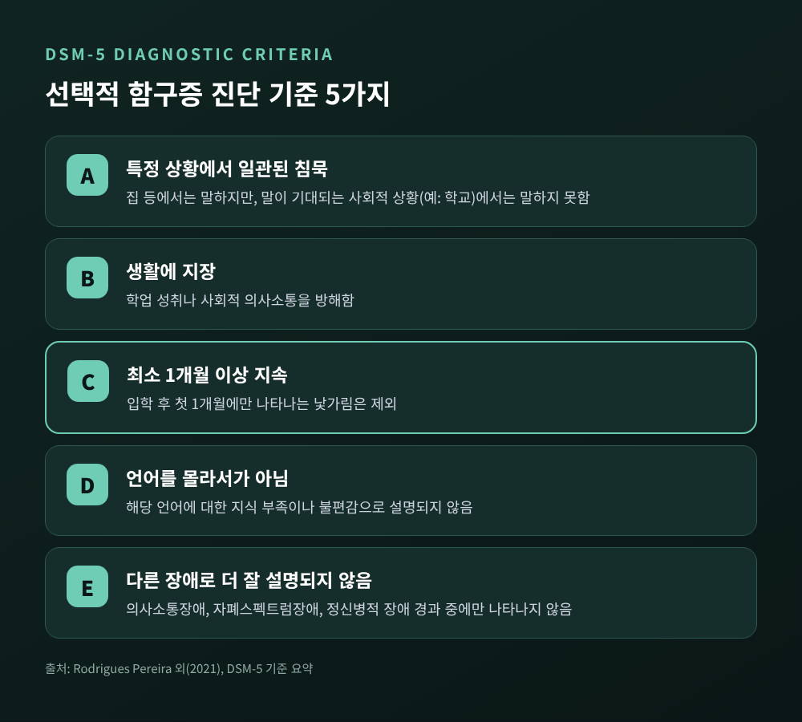
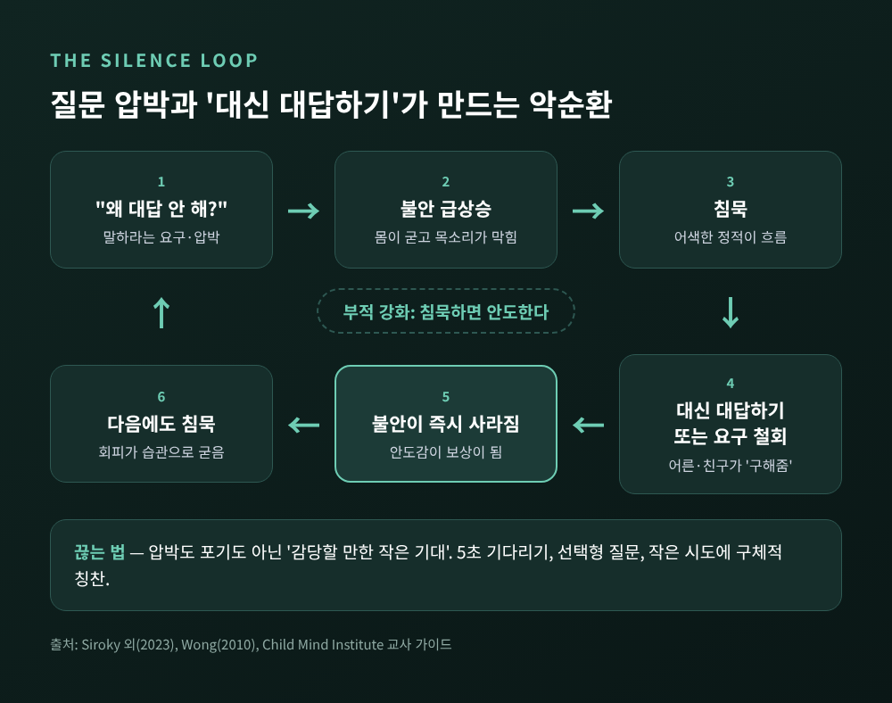
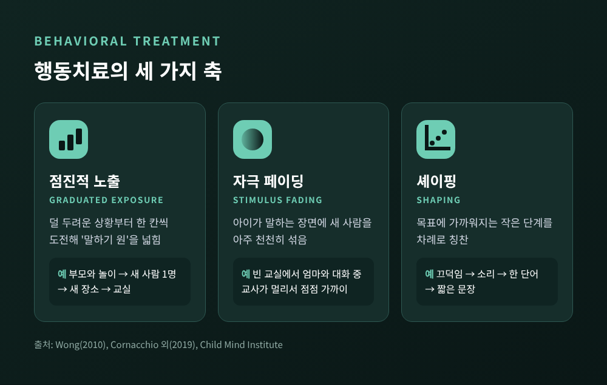
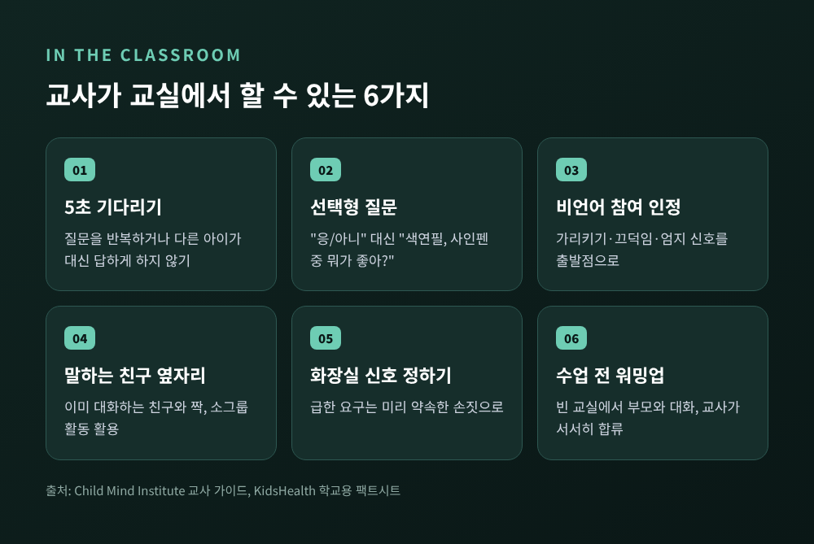
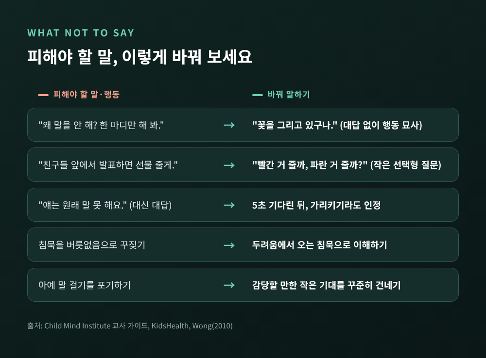

선택적 함구증, 고집이 아닌 불안 — 학교에서 말을 잃는 아이 돕는 법

오늘은 집에서는 재잘대던 아이가 교실 문턱만 넘으면 입을 닫는 현상, 선택적 함구증에 대해 이야기해 보려 합니다. 먼저 핵심부터 세 줄로 정리하겠습니다.
- 선택적 함구증은 '말을 안 하는' 고집이 아니라 '말을 못 하는' 불안장애입니다.
- 다그치는 질문도, 대신 대답해 주는 배려도 침묵을 굳히는 악순환을 만듭니다.
- 부모와 교사가 함께하는 단계적 행동치료가 가장 근거가 탄탄한 해법입니다.
■ 집에서는 수다쟁이, 학교에서는 침묵
가정에서는 형제와 다투고 노래까지 부르는 아이가 있습니다. 그런데 학교에서는 출석을 불러도 대답이 없습니다. 선생님 눈에는 버릇없거나 고집 센 아이로 보이기 쉽습니다.
하지만 전문가들의 설명은 다릅니다. 아이는 말하기를 거부하는 것이 아니라, 그 순간 말을 할 수 없는 상태라는 것입니다. 미국 소아 정신건강 기관인 차일드 마인드 인스티튜트는 이를 "말을 거부하는 것이 아니라 말할 수 없는 것"이라고 정리합니다. 학교용 안내 자료들도 이 침묵을 반항으로 대하지 말라고 거듭 당부합니다.
몸이 먼저 신호를 보내기도 합니다. 등교나 행사 전에 두통, 복통, 구토를 호소합니다. 눈을 피하고, 몸이 굳고, 표정이 사라지는 모습도 흔합니다. 겉으로는 차분해 보여도 속에서는 경보가 울리고 있는 셈입니다.
참고로 어떤 상황에서도 말을 하지 않는 '함구증'과는 다릅니다. 선택적 함구증의 아이는 편안한 곳에서는 나이에 맞게 충분히 말합니다.
■ DSM-5 진단 기준, 무엇을 보고 판단하나
미국정신의학회의 진단 편람 DSM-5는 선택적 함구증을 불안장애로 분류합니다. 진단 기준은 다섯 가지로 요약됩니다.

- 다른 상황에서는 말하면서도, 말이 기대되는 특정 사회적 상황(예: 학교)에서는 일관되게 말하지 못합니다.
- 그 때문에 학업이나 사회적 의사소통에 지장이 생깁니다.
- 최소 1개월 이상 이어지며, 입학 후 첫 한 달에만 그친 것이 아닙니다.
- 해당 언어를 몰라서나 익숙지 않아서 생긴 침묵이 아닙니다.
- 의사소통장애나 자폐스펙트럼장애, 정신병적 장애로 더 잘 설명되지 않습니다.
세 번째 기준이 중요합니다. 새 학기 첫 달의 낯가림은 많은 아이에게 자연스러운 적응 과정입니다. 그래서 기준에서 일부러 빼 둔 것입니다.
네 번째 기준도 눈여겨볼 만합니다. 다문화 가정 아이가 한국어가 서툴러 말이 적은 경우를 섣불리 함구증으로 판단해서는 안 됩니다. 제2언어를 익히는 아이에게는 정상적인 '침묵기'가 있기 때문입니다.
■ 얼마나 흔한가 — 연구마다 다른 숫자
유병률은 연구마다 편차가 큽니다. 어느 한 숫자로 단정하기 어렵기 때문에 주요 수치를 나란히 적어 두겠습니다.
- 2021년 국제 리뷰(Muris·Ollendick): 0.03%~1.9%
- 2021년 진단 도구 리뷰(Rodrigues Pereira 등): 0.7%~2%, 초록에서는 1~2%
- 2010년 리뷰(Wong): 서유럽·미국·이스라엘 자료 종합 0.47~0.76%
- 미국 초등학교 표본(Bergman 등, 2002): 약 133명 중 1명(0.75%)
차이가 나는 이유는 표본이 병원 환자인지 일반 학생인지, 나이대와 진단 방법이 어떤지가 연구마다 달라서입니다. 정리하면 드물지만 '아주 희귀하다'고 넘길 수준은 아닙니다. 학교 표본 기준으로는 대략 백 명 중 한 명 안팎으로 보는 연구가 많습니다.
시작 시기는 연구에 따라 2~4세, 3~6세, 5세 이전 등으로 조금씩 다르게 보고됩니다. 공통점은 유아기에 시작된다는 것입니다. 다만 집에서는 문제가 드러나지 않아, 단체생활이 본격화되는 입학 이후에야 발견되는 경우가 많습니다.
■ 사회불안과 얼마나 겹칠까
선택적 함구증은 사회불안과 아주 가깝습니다. 2020년 22개 연구, 837명의 아이를 묶은 메타분석이 있습니다. 여기서 약 80%가 다른 불안장애를 하나 이상 함께 갖고 있었습니다. 가장 흔한 것은 사회공포증(사회불안장애)으로, 약 69%였습니다.
이 아이들은 사회불안을 겪는 아이들처럼 남에게 부정적으로 평가받는 것을 두려워합니다. 낯선 사람과 환경 앞에서 움츠러드는 '행동 억제' 기질을 타고난 경우도 많습니다. 일부 학자는 선택적 함구증을 사회불안장애로 이어지는 이른 단계로 보기도 합니다.
다만 반론도 있습니다. 같은 메타분석에서 약 20%는 다른 불안 진단이 없었습니다. 그래서 모든 사례를 불안 하나로만 설명할 수 있느냐는 질문이 남아 있습니다. 말·언어 발달 지연이 함께 있는 아이도 적지 않아, 언어 평가를 같이 받는 것이 권장됩니다.
■ 질문 압박이 침묵을 키우는 원리
여기서부터가 부모와 교사에게 가장 중요한 대목입니다. 선택적 함구증은 주변의 반응 때문에 유지되고 강화되기 쉽습니다.

흐름은 이렇습니다. 어른이 "왜 대답을 안 하니?"라고 묻습니다. 아이의 불안이 치솟고, 입은 더 굳게 닫힙니다. 분위기가 어색해지면 옆에 있던 부모나 친구가 대신 대답해 줍니다. 그 순간 아이의 불안은 확 내려갑니다.
아이의 뇌는 이 경험을 기억합니다. '가만히 있으면 불안이 사라진다'는 학습이 이루어지는 것입니다. 행동치료에서는 이를 부적 강화라고 부릅니다. 불쾌한 것이 사라지는 경험이 그 행동을 더 자주 하게 만든다는 뜻입니다.
함정은 양쪽에 있습니다. 한쪽은 압박입니다. 달래고 조르고 다그치면 불안의 크기만 키웁니다. 다른 한쪽은 포기입니다. 교사가 아예 말 걸기를 그만두면, 말해야 할 상황 자체가 사라지면서 침묵은 더 단단해집니다.
예전에는 '기다려 주면 저절로 말하겠지'라는 조언이 많았습니다. 지금 연구들은 기다림만으로는 부족하다고 말합니다. 나이가 많을수록, 증상이 오래 이어질수록 치료 결과가 나빠진다는 보고도 있습니다. 필요한 것은 강요도 방치도 아닌, 아이가 감당할 만한 '작은 기대'를 꾸준히 건네는 일입니다.
■ 행동치료의 세 가지 축 — 노출, 자극 페이딩, 셰이핑
치료의 원리는 단순합니다. 불안이 덜한 곳에서 시작해, 한 칸씩 범위를 넓힙니다.

점진적 노출은 덜 무서운 상황부터 조금씩 도전하게 하는 방법입니다. 한 치료 기관은 이를 아이의 '말하기 원'을 넓히는 과정이라고 표현합니다. 아이가 가장 편하게 말하는 상대, 대개는 부모와 즐겁게 노는 장면에서 출발합니다. 그 원 안에 새로운 사람과 장소를 하나씩 들여놓습니다.
자극 페이딩은 불안을 일으키는 자극을 아주 천천히 섞는 기법입니다. 예를 들어 방과 후 빈 교실에서 아이가 엄마와 편하게 대화합니다. 담임 선생님이 멀찍이서 서성이다가, 다음 날은 조금 더 가까이, 그다음에는 같은 책상에 앉습니다. 아이가 말하는 흐름이 끊기지 않을 만큼만 천천히 다가가는 것이 핵심입니다.
셰이핑은 목표 행동에 가까워지는 작은 단계를 차례로 칭찬하는 방법입니다. 끄덕임에서 시작해 소리 내기, 한 단어, 짧은 문장으로 나아갑니다. 처음부터 "발표해 보자"를 목표로 삼지 않습니다.
여기에 말하기 시도를 구체적으로 보상하는 강화 계획이 함께 쓰입니다. 반대로 침묵 자체에는 보상이 돌아가지 않도록 설계합니다.
■ 부모가 치료의 주인공이 되는 PCIT-SM
최근 근거가 쌓이고 있는 방식은 부모가 직접 치료자가 되는 접근입니다. 대표적인 것이 PCIT-SM, 즉 선택적 함구증에 맞춘 부모-자녀 상호작용 치료입니다.
두 단계로 진행됩니다. 첫 단계(CDI)에서는 아이가 놀이를 주도하고, 어른은 질문 없이 행동을 묘사하고 구체적으로 칭찬합니다. 말해야 한다는 부담 없이 관계의 안전감을 먼저 쌓는 과정입니다. 두 번째 단계(VDI)에서는 "빨간 블록 줄까, 파란 블록 줄까?" 같은 선택형 질문으로 말을 조심스럽게 이끌어 냅니다. 부모는 치료실에서 실시간 코칭을 받으며 이 기술을 익히고, 집과 학교로 옮겨 씁니다.
연구 결과도 긍정적입니다.
- 2019년 캐나다 연구(Catchpole 등): 4~10세 31가정이 주 1회, 16회기 PCIT-SM을 받았습니다. 여러 장면에서 말하기가 크게 늘었고(효과크기 d=1.80), 1년 뒤에도 유지됐습니다.
- 2019년 미국 무작위 대조 예비 연구(Cornacchio 등): 5~9세 29명에게 5일간의 집중 그룹 캠프를 적용했습니다. 4주 시점 치료 반응률은 50%, 대기군은 0%였습니다. 다음 학년 8주차에는 46%가 진단 기준을 벗어났습니다.
- 통합행동치료 연구(Bergman 등, 2013): 4~8세 아이들이 24주간 20회기를 받은 뒤 67%가 진단 기준을 충족하지 않았습니다.
한계도 분명히 말씀드려야 합니다. 대부분 표본이 수십 명 수준으로 작고, 대기군과 비교한 연구가 많습니다. 그럼에도 여러 리뷰는 행동기법에 부모 참여와 학교 협력을 더한 방식이 가장 강한 효과를 보인다고 정리합니다. 약물(SSRI)은 근거가 아직 적어, 필요할 때 전문의가 판단하는 보조 수단에 가깝습니다.
■ 교실에서 교사가 할 수 있는 일
교사는 아이가 하루 중 가장 오래 머무는 공간을 책임집니다. 그래서 작은 조정 하나가 큰 차이를 만듭니다.

- 질문 후 5초 기다리기. 같은 질문을 반복하거나 다른 아이가 대신 답하게 하지 않습니다.
- 선택형으로 묻기. "응/아니" 대신 "색연필이 좋아, 사인펜이 좋아?"처럼 묻습니다.
- 행동을 중계하듯 말하기. "꽃을 그리고 있구나"처럼 대답을 요구하지 않는 관심을 보여 줍니다.
- 비언어 참여 인정하기. 가리키기, 끄덕임, 엄지 신호를 출발점으로 받아들입니다.
- 자리와 모둠 조정. 이미 말을 나누는 친구 옆에 앉히고, 소그룹 활동을 활용합니다.
- 미리 정해 두는 신호. 화장실 같은 급한 요구는 손짓으로 알릴 수 있게 합니다.
- 등교 전 워밍업. 다른 아이들이 오기 전 빈 교실에서 부모와 이야기하게 하고, 교사가 서서히 합류합니다.
- 평가 방식 조정. 집에서 녹음한 읽기나 쓰기 답안을 임시로 인정합니다. 단, 최종 목표는 직접 말하기입니다.
- 구체적 칭찬. 작은 소리라도 냈다면 "필요한 걸 말해 줘서 고마워"처럼 행동을 짚어 칭찬합니다.
학급 분위기도 살펴야 합니다. 친구들이 "쟤는 원래 말 안 해"라고 꼬리표를 붙이지 않도록 안내가 필요합니다. 따돌림의 표적이 되지 않는지도 지켜봐야 합니다. 무엇보다 치료를 받고 있다면 치료진의 목표와 보상 방식을 교실에서도 맞추는 것이 좋습니다.
■ 하지 말아야 할 말과 행동
선의에서 나온 말이 오히려 아이를 몰아세우기도 합니다.

- "왜 말을 안 해?", "한 마디만 해 봐." — 압박은 불안을 키울 뿐입니다.
- "반 친구들 앞에서 발표하면 선물 줄게." — 지금 감당하기 어려운 목표를 걸면 실패 경험만 쌓입니다.
- "얘는 원래 말 못 해요." — 아이 앞에서 꼬리표를 붙이고 대신 대답하는 말입니다.
- 침묵을 버릇없음으로 꾸짖기 — 두려움을 반항으로 오해하는 것입니다.
- 아예 말 걸기를 포기하기 — 편해 보여도 침묵을 강화합니다.
- 준비 없이 반을 옮기기 — 새로운 환경에서 불안이 다시 커질 수 있습니다.
대신 "천천히 해도 괜찮아" 한마디와 함께 기다리고, 아이가 할 수 있는 다음 작은 단계를 함께 찾아 주시길 권합니다.
■ 전문가의 도움이 필요한 때
입학 첫 달이 지나서도 학교에서의 침묵이 한 달 넘게 이어진다면 상담을 받아 보시길 권합니다. 집에서 말을 잘하니 괜찮겠지 하고 넘기기 쉽습니다만, 부모가 문제를 과소평가하기 쉬운 장애라는 점을 기억해 주셨으면 합니다. 치료는 어릴 때 시작할수록 결과가 좋다는 보고가 있습니다.
진단과 평가는 소아청소년정신건강의학과 전문의에게 받을 수 있습니다. 언어 발달이 걱정된다면 언어 평가도 함께 요청하는 것이 좋습니다. 학교 안에서는 Wee클래스(학교 상담실)가 첫 창구입니다. 교육지원청 단위의 Wee센터는 진단·상담·치유 지원을 맡고, 필요하면 전문 기관과 연계합니다. 담임 선생님, 학교 상담 선생님과 먼저 이야기를 나누는 것도 좋은 출발점입니다.
이 글은 일반적인 정보를 제공하기 위한 것으로, 개별 진단이나 치료를 대신하지 않습니다. 아이의 상태가 걱정된다면 소아청소년정신건강의학과 전문의나 학교 Wee클래스·지역 Wee센터에 상담을 요청해 주시기 바랍니다.
끝으로 한 마디만 덧붙이겠습니다. 교실에서 입을 다문 아이는 선생님을 무시하는 것이 아닙니다. 그 순간 누구보다 애쓰며 버티고 있는 중입니다.
"말을 안 하는 것이 아니라, 아직 못 하는 것입니다."
언젠가 그 아이가 작은 목소리로 대답하는 날이 올지 물으신다면, 어른들이 서두르지 않고 한 걸음씩 길을 내어 준다면 충분히 그렇다고 답하겠습니다.
#선택적함구증 #선택적함묵증 #아동불안장애 #사회불안 #PCIT #자극페이딩 #교사가할수있는일 #Wee센터 #소아청소년정신건강의학과